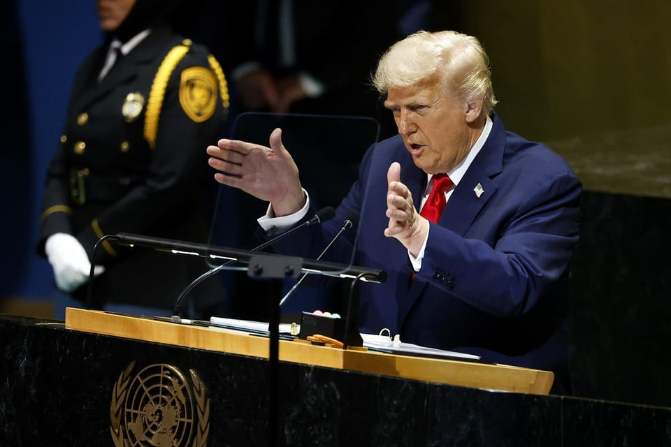

世界苦茶09月24日新闻 | 32条 | 特朗普称北约应击落俄方飞机

特朗普称北约应击落俄方飞机 | 中欧北极航道开通 | 印尼与欧盟签订自贸协议 | 韩国批捕统一教总裁 | 中国连续两月用电量超过1万亿千瓦时
每日三个新闻解读
苦茶数据
美元兑人民币：7.11（昨日7.11，前日7.11）
美元兑日元：147.87（昨日148.36，前日147.90）
上证指数：3826（昨日3821，前日3822）
标普500指数：6656（昨日6693，前日6664）
比特币：112081（昨日112984，前日114461）
布伦特原油：67.76（昨日67.21，前日67.08）
中国新闻
• 上海绿捷午餐发臭被查 ：针对市民反映的学生午餐发臭事件，上海市通报称，绿捷公司涉嫌瞒报食品安全相关信息，目前公安机关已立案侦查。上海市公安局、市场监督管理局、教育委员会星期二发布情况通报。通报称，针对市民反映的上海绿捷实业发展有限公司9月15日供应本市部分学校午餐中虾仁炒蛋存在问题，市委、市政府高度重视，相关部门迅速介入调查。
• 潘功胜会见达利欧 ：中国人民银行网站发布消息，中国人民银行行长潘功胜星期二会见到访的桥水基金创始人达利欧。据中国央行文告，双方就国际经济形势及金融市场动态等交换了看法。会后，达利欧就债务周期等话题与中国人民银行、国家外汇管理局工作人员进行了交流。
• 澳片在华被改异性恋 ：澳大利亚恐怖爱情电影《同甘共苦》在中国上映的版本，当中同性恋的情侣被数字化修改为异性恋情侣。媒体报道称，此举可能涉及人工智能技术，显示了电影审查的新趋势。据彭博社，电影中一对同性伴侣中的一名男性被替换成了女性。这一修改在社交媒体上被揭出，引发观众反弹。许多人是在网络对比原版与修改版片段后才注意到。在微博拥有408万粉丝的影评人”蛋蛋秀“在9月13日看完点映后发微博称，电影本身是一部中规中矩的恐怖片…“不推荐观看更重要的原因是，继剪刀手、穿衣服之后，又发明了新型手段：用AI给角色改脸改性别…”
• 习近平抵达乌鲁木齐出席庆典 ：中国国家主席习近平星期二下午乘专机抵达乌鲁木齐，出席新疆维吾尔自治区成立70周年庆祝活动。据中国央视新闻报道，习近平率中央代表团星期二下午乘专机抵达乌鲁木齐，出席新疆维吾尔自治区成立70周年庆祝活动。中共中央政治局常委、全国政协主席、中央代表团团长王沪宁，中共中央政治局常委、中央办公厅主任蔡奇等同机抵达。新疆维吾尔自治区党委书记陈小江、自治区人民政府主席艾尔肯·吐尼亚孜、自治区人大常委会主任祖木热提·吾布力、自治区政协主席努尔兰·阿不都满金、新疆生产建设兵团政委何忠友等在舷梯下迎候。
• 中欧北极快航开通 ：全球首条中欧北极集装箱快航航线（简称中欧北极快航）正式开通，航线取道北极东北航道，经白令海峡，单程18天左右，将刷新宁波至欧洲的航运时效纪录。据《环球时报》报道，“伊斯坦布尔桥”轮星期一下午在宁波舟山港完成超1000标准箱的集装箱装载作业，将启程经北极航道驶往英国最大集装箱港口弗利克斯托港。报道称，这标志着全球首条中欧北极快航正式开通。这条航线取道北极东北航道，经白令海峡，单程18天左右，将刷新宁波至欧洲的航运时效纪录。
• 中国颁布军用土地条例 ：中国国务院与中共中央军委公布《军用土地管理条例》，当中提到军队建设使用土地，应当优先使用存量军用土地，以及规定禁止侵占、污染、破坏军用土地。据央视新闻客户端消息，国务院、中央军委公布《军用土地管理条例》（简称《条例》），自今年11月1日起施行。《条例》共30条，包括明确军用土地是指依法由军队单位使用管理的土地，但不包括军队单位租用、借用的土地。《条例》提到确立军用土地集中统管制度，称军用土地的使用权属于中央军委，由中央军委后勤保障部代表中央军委行使。中央军委后勤保障部应当加强对军用土地使用的统筹规划，引导军用土地资源优化配置。
• 中国驴存量锐减现危机 ：中国面临“缺驴”危机，有驴肉火烧商家改卖马肉火烧，还有供货商用马肉假冒驴肉，被追究刑事责任。综合《中国新闻周刊》和《北京日报》报道，中国畜牧业协会驴业分会相关负责人星期一说，“目前我国牛马都不缺，就缺驴。”数据显示，早在1990年，中国驴存栏量超1100万头，约占全球四分之一。但到2015年，驴存栏数量便减少到了不足400万头，到了2023年，全国驴存栏量仅剩下约146万头，目前总存栏量仍在持续下降中。
• 广州中医院发生伤医案 ：广州中医药大学第一附属医院星期一发生伤医事件。知情人士透露，被刺伤的医生虽脱离生命危险，但伤情严重。据澎湃新闻报道，广州中医药大学第一附属医院骨伤中心主任王海彬教授星期一出诊时遭遇袭击受伤。医院一名知情人士称，行凶者是王医生多年前的膝关节手术患者，一周前曾来找过王医生。星期一上午，这名患者持刀入院，反锁房门对王医生行凶，导致王医生多处受伤严重。
• 中国向瓦努阿图捐警用装备 ：太平洋岛国瓦努阿图官员说，中国将向该国捐赠价值超过40万美元的警用装备。据法新社引述当地媒体报道，瓦努阿图内政部长纳普阿特说，北京将向瓦努阿图警察部队捐赠摩托车、无人机和其他装备。纳普阿特说，两国还在考虑签署一项警务协议，旨在更好地协调和管理警务领域合作。
• 中国八月用电量再创新高 ：中国国家能源局今日发布八月份全社会用电量等数据。八月，全社会用电量10154亿千瓦时，同比增长5.0%。1-8 月，全社会用电量累计68788亿千瓦时，同比增长4.6%。据悉，7、8月份连续两个月全社会用电量超万亿千瓦时，这在全球也是首次。推动用电量如此之高与夏季高温天气直接相关，七到八月，多轮高温过境中国，高温高湿天气来得早、持续久，第三产业和居民空调等用电快速攀升，8月这两项加起来就接近4000亿千瓦时，占比近四成。八月当月，工业用电量达到5909亿千瓦时，占比近六成，全国制造业用电量同比增长5.5%，为今年以来最高。
亚太印太新闻
• 印尼与欧盟签署自贸协定 ：经过10年谈判，印度尼西亚与欧盟终于敲定贸易协定。法新社报道，印尼与欧盟星期二敲定《印尼—欧盟全面经济伙伴关系协定》，这是继新加坡和越南之后，欧盟与东南亚国家签署的第三份此类协定。欧盟委员会贸易专员谢夫乔维奇在峇厘岛与印尼经济事务统筹部长艾尔朗加签署协定后说，这项贸易协定的敲定，向世界传递了强有力信号，“表明我们团结一致，致力于开放、基于规则且互惠互利的国际贸易”。欧盟委员会主席冯德莱恩也在一则声明中指出：“欧盟出口商每年可因此节省约6亿欧元的印尼市场进口关税，印尼消费者则能以更实惠的价格购得更多欧洲产品。”
• 美日韩外长谈台海遭反驳 ：美日韩三国外长对台海局势表示担忧，中国大陆外交部表达强烈不满，称坚决反对美日韩三国“在台湾和涉海问题上说三道四”。美国、日本和韩国外长星期一会晤后发表联合声明，称对台湾周边日益频繁的破坏稳定活动感到担忧，并强烈反对在南中国海提出“非法海洋主张”，以及试图强制执行此类主张的行为。中国大陆外交部发言人郭嘉昆星期二在例行记者会上回击，指美日韩三国在台湾和涉海问题上说三道四，干涉中国内政，污蔑抹黑中国。
• 萧美琴称台美关系稳固 ：台湾副总统萧美琴说，台美关系一直都坚实稳固，关税谈判团队持续对话。据联合新闻网报道，萧美琴星期二出席2025全球产业脉动与海外台湾企业影响力经贸论坛。她说，台美关系一直都坚实稳固，双方理念相近。“我们即便面临全球关税的挑战，但我们的谈判团队依然持续在进行对话，争取更有利的条件。”
• 赖清德称台湾是民主防线 ：台湾总统赖清德说，台湾更强韧、更安全，世界民主的防线就能更稳固。综合三立新闻网和联合新闻网报道，纽约非营利组织Concordia年度峰会9月21日至24日举行，赖清德通过录像方式，以“携手共创更安全的世界—台湾在不确定时代的角色”为题发表演说。赖清德说，台湾身处印太第一岛链前线，直接面对威权威胁，面对不确定的时代，台湾将继续做世界和平的舵手及世界繁荣的推手，以积极策略和坚定信念，与世界携手共进。
• 韩法院批捕统一教总裁韩鹤子 ：韩国法院对涉嫌与前总统尹锡悦政权勾结的统一教总裁韩鹤子签发逮捕令。韩联社报道，首尔中央地方法院星期二对韩鹤子签发逮捕令。她涉嫌向尹锡悦夫人金建希等人行贿，法院认为她有毁灭证据之虞，并批准逮捕她。韩鹤子2012年9月获任统一教总裁，这是她在任期间首次以犯罪嫌疑人身份被传讯并批捕。她星期一坐着轮椅到首尔中央地方法院出庭，接受逮捕必要性审查。
科技新闻
• 欧药管局否认泰诺致自闭症 ：欧洲药品管理局星期二说，没有新证据表明，欧盟有必要改变关于怀孕期间使用扑热息痛的建议。扑热息痛在美国称为泰诺。美国总统特朗普星期一称，自闭症与儿童接种疫苗，以及妇女在怀孕期间服用泰诺存在关联，把这一缺乏科学证据支持的说法提升到了美国卫生政策的前沿。对此，欧洲药品管理局星期二在发给路透社的声明中指出：“现有证据未发现怀孕期间使用扑热息痛，与自闭症之间存在联系。”声明说，孕妇可在有需要时服用扑热息痛，但应根据最低有效剂量和频率来使用。
• 谷歌承诺恢复被封YouTube账号 ：谷歌周二承诺，将为因政治言论而被永久封禁的 YouTube 账户提供恢复功能。谷歌在一份提交给了众议院司法委员会的文件中详细介绍了其显著的转变。代表谷歌的律师写道：“为了体现公司对言论自由的承诺，如果公司因屡次违反不再有效的 COVID-19 和选举诚信政策而终止了他们的频道，YouTube 将为所有创作者提供重新加入该平台的机会。”谷歌还承认，它曾面临拜登政府要求其删除有关新冠肺炎内容的压力，律师写道：“包括白宫官员在内的拜登政府高级官员多次持续地与 Alphabet 接触，并就某些与 COVID-19 疫情相关的用户生成内容向该公司施压，这些内容并未违反其政策。”
• 谷歌报告称九成工程师用AI ：谷歌最新一项研究显示，绝大多数科技行业从业者在工作中都在使用AI工具，主要用于撰写和修改代码。这份由谷歌旗下 DORA 研究部门发布的报告，基于对全球5000名科技专业人士的调研结果。数据显示，90%的软件工程师在工作中使用AI工具，比去年上升14个百分点。不过，尽管渗透率大幅飙升，但工程师对AI产出的信任依旧谨慎。46% 的受访者表示他们 “有点信任” AI生成代码的质量，23%称 “只信任一点”，而20%则表示“非常信任”。与此同时，31% 的人认为AI “略微提升”了代码质量，30%认为“毫无提升”
财经新闻
• 美联储官员呼吁加快降息 ：美国联邦储备局理事鲍曼认为，美联储正面临降息太慢的风险，必须果断采取行动，在接下来几个月加快步伐降低利率以应对劳动力市场的趋软。鲍曼周二在肯塔基银行公会年度大会上发表演讲时说：“如今我们已接连几个月看到劳动力市场的情况在恶化，联邦公开市场委员会是时候果断行动，积极应对劳动力市场动力放缓和开始脆弱的迹象。”她认为，近期的数据反映了美联储正面临出手太慢的风险，如果情况继续恶化，当局必须加快步伐并以更大幅度调整政策利率。
• 美中稀土争端未解 ：美国国会访华代表团团长在与中国官员会晤后表示，中美之间围绕北京控制稀土供应的争端尚未解决，这显示双边关系中仍然存在一个关键的摩擦因素。据彭博社报道，美国众议院军事委员会资深议员史密斯星期二在北京举行的新闻发布会上称，稀土问题仍面临持续挑战。史密斯说：“我认为我们还没有解决稀土问题”，但他没有具体说明症结所在。“我认为这个问题还须要进一步解决。”
• 中国买入阿根廷大豆 ：路透社引述三名贸易商在星期二说，在阿根廷星期一取消谷物出口税后，中国买家至少订购了10船阿根廷大豆。这对已经无法进入中国市场，并受到低价打击的美国农民而言又是一次挫折。阿根廷的临时税收举措提高了大豆竞争力，促使贸易商为中国第四季度的库存锁定货源，这一时期通常以美国出货为主，但现在受到中美贸易战的影响。其中一名贸易商称，中国买家已预订了15批货物。
• 中美高层会谈聚焦食品出口 ：中国商务部国际贸易谈判代表兼副部长李成钢星期一会见美国中西部地区政商领袖代表团。分析人士推测，美国中西部的食品出口将成为中美贸易协议的关键环节。据中国商务部官网星期二消息，李成钢星期一会见美国中西部地区政商领袖代表团，双方就中美经贸关系、中美省州经贸合作等议题进行交流。路透社报道，交易商说，作为全球最大的大豆买家，中国至今尚未购买任何美国秋季收获的大豆，当中大部分来自美国中西部。
• 中国欲成各国黄金托管方 ：知情人士说，中国旨在成为外国主权黄金储备的托管方，以此增强中国在全球黄金市场的地位。彭博社星期二引述知情人士报道，中国央行正通过上海黄金交易所，吸引友好国家的央行购买黄金并将其存放在中国境内。知情人士说，这一举措已在近几个月内展开，并引起至少一个东南亚国家的兴趣。报道称，此举将增强北京在全球金融体系中的地位，进一步推动中国建立一个对美元和美国、英国和瑞士等西方金融中心依赖程度更低的世界。各国一直在抢购黄金，以对冲日益加剧的地缘政治风险，这为中国央行提供了一个机会，为这一被视为抵御经济冲击关键的资产提供避风港。
• 波音大单谈判进入尾声 ：美国驻华大使庞德伟称，美国和中国就美国波音公司“巨额”飞机订单的谈判正处于最后阶段。据彭博社报道，虽然庞德伟没有透露潜在订单规模的细节，但他在北京与到访的美国国会议员代表团一起出席吹风会时的表态显示，有关协议将很快敲定。庞德伟说：“这是一笔巨额订单，对总统来说非常重要。对波音来说也非常重要。我认为这对中国来说一样非常重要……我认为，谈判已经进入最后几天，最后几周，我们希望最终能够达成。”
• 印尼国会通过2026预算案 ：印度尼西亚国会批准总统普拉博沃提出的2026年财政预算案。这份预算包括3842亿印尼盾支出，并预测财政赤字占国内生产总值的2.68%。路透社报道，印尼国会星期二批准普拉博沃政府的2026年预算案。议长提交表决的预算案设定了5.4%的经济增长目标，高于2025年设定的5.2%；预算案计划实现约3153万亿印尼盾的财政收入。2026年预算案拟议支出总额，较上一年预计总支出增长9%，收入目标也较上年预期提升约10%；赤字占GDP比重则低于今年预测值，同时低于法律规定的3%上限。
俄乌战争
• 特朗普称北约应击落俄机 ：美国总统特朗普说，他认为北大西洋公约组织国家应当击落侵犯其领空的俄罗斯飞机。在与乌克兰总统泽连斯基会晤时，特朗普还说，美国将继续向北约提供武器。特朗普星期二在纽约联合国大会间隙与泽连斯基会晤时，一名记者直接问及北约盟友是否应击落俄罗斯飞机，特朗普回答说：“是的，我同意。”随后在社交媒体上，特朗普说，他认为在欧盟的支持下，乌克兰不仅有能力进行反击，而且能够收复俄罗斯夺取的全部领土，甚至更多。
• 波兰重开对白罗斯口岸 ：波兰首相图斯克说，波兰将在本周恢复对白罗斯的边境口岸。法新社报道，两周前，两国边境因俄白举行的大规模军事演习而关闭，这一措施同时影响铁路通道并扰乱了中欧之间的重要陆路货运线路。图斯克星期二在新闻发布会上说：“这些演习的结束降低了与我们东部邻国咄咄逼人态度相关的各类风险，虽然不能说已完全消除，但确实有所缓解。”
• 挪威谴责俄机入侵领空 ：挪威政府称，俄罗斯在今春与夏季共三次侵犯挪威领空，首相斯特勒在一份声明中称，这类行为“不可接受”。法新社报道，斯特勒星期二指出，尽管这些侵犯事件发生在今年春夏，但其严重程度低于近期俄方对爱沙尼亚、波兰和罗马尼亚的类似行为。他在声明中表示：“我们无法确定这是否为故意行为，还是由导航失误造成。无论原因如何，这都是不可接受的。”
国际新闻
• 特朗普抨击联合国未能“充分发挥”其潜力： 美国总统唐纳德·特朗普周二在联合国大会的演讲中猛烈抨击联合国，暗示该组织要么忽视，要么加剧了世界各地原本需要他来解决的问题。“联合国的目的是什么？”特朗普问道。“它甚至没有充分发挥其潜力。”特朗普在演讲中滔滔不绝，从抱怨失去翻修联合国总部的合同，到讲述他所认为的外交政策成就，他将联合国描绘成一个过时、低效的组织，并表示自己在没有任何帮助的情况下努力结束了“七场战争”。“很遗憾，这些事情是我做的，而不是联合国做的，”特朗普说道。“我结束了七场战争，与这些国家的领导人都进行了交涉，却从未接到联合国打来的电话，表示愿意帮助达成协议。”
• 伊朗处决人数创纪录 ：总部设在挪威的伊朗人权组织周二发布报告称，伊朗今年至今已处决了创纪录的至少1000人，它谴责伊朗政府在监狱了发动“大屠杀”，以在当地社会营造集体恐惧的氛围。伊朗人权组织说，单单过去一周就至少有64人被处死，平均每天多过九人。虽然2025年还有三个多月，今年的数据已经超过它2008年开始统计数据以来的最高记录，即去年的975人。自1979年政变建立神权政府及两伊战争以来，伊朗曾在1980年代至1990年代初大规模处决囚犯。但人权组织指出，自伊朗民间在2022年至2023年间发动示威活动挑战哈梅内伊领导的神权政府，以及今年六月与以色列爆发12日战争以来，伊朗政府正以死刑进行一场比过去30年来都更为激烈的清洗运动。
• 美特勤局摧毁威胁通信网 ：美国特勤局称在纽约大都会区摧毁了一处用于威胁美方高级官员的复杂电子通信网络。此举发生在各国领导人齐聚纽约出席联合国大会之际，特勤局称该网络对其保护任务构成“迫在眉睫的威胁”。路透社报道，特勤局星期二在声明中称，初步分析显示，这些设备涉及“国家级威胁行为者与联邦执法机构已掌握的个人”之间的蜂窝通信联系。相关硬件集中分布在距联合国大会活动地点约56公里范围内的多处地点，所属“三州地区”涵盖纽约州、康涅狄格州与新泽西州。
• 特朗普拟加价H-1B签证 ：美国总统特朗普决定对新H-1B签证加价10万美元，重创印度科技企业。不过美国国务卿鲁比奥强调，美印关系至关重要。路透社报道，鲁比奥星期一在纽约参加联合国大会期间，会见印度外交部长苏杰生。美国国务院发声明说，双方同意两国将继续携手推动自由开放的印太地区发展，包括通过四方安全对话机制。声明说：“鲁比奥部长重申，印度对于美国具有至关重要的战略意义。对印度政府在贸易、国防、能源、医药、关键矿产和其他双边关系领域，持续开展合作表示赞赏。”
• 伊朗外长坚持外交解决核争端 ：伊朗外交部长阿拉格齐说，伊朗坚持主张外交是解决与西方长达数十年核争端的唯一途径；在制裁迫近之际，西方必须选择是合作还是对抗。路透社报道，阿拉格齐星期一对伊朗国家电视台发表上述言论。他表明，伊朗不会向压力和威胁语言屈服，他希望未来几天能够找到外交解决方案，“否则德黑兰将采取相应措施”。阿拉格齐当天在美国纽约会见国际原子能机构总干事格罗西，预计在联合国大会期间与欧洲官员会晤，讨论伊核计划。
• 杜特尔特遭ICC谋杀指控 ：菲律宾前总统杜特尔特被指在担任市长和总统期间，杀害涉嫌毒品犯罪者，面临国际刑事法院三项谋杀罪指控。彭博社报道，国际刑事法院检察官星期一公开检方7月4日提交的起诉书称：“杜特尔特及其共犯存在共同计划或协议，通过包括谋杀在内的暴力犯罪手段，‘清除’菲境内涉嫌犯罪者。”检方同时指控杜特尔特作为间接共犯，下令并协助实施这些犯罪行为。